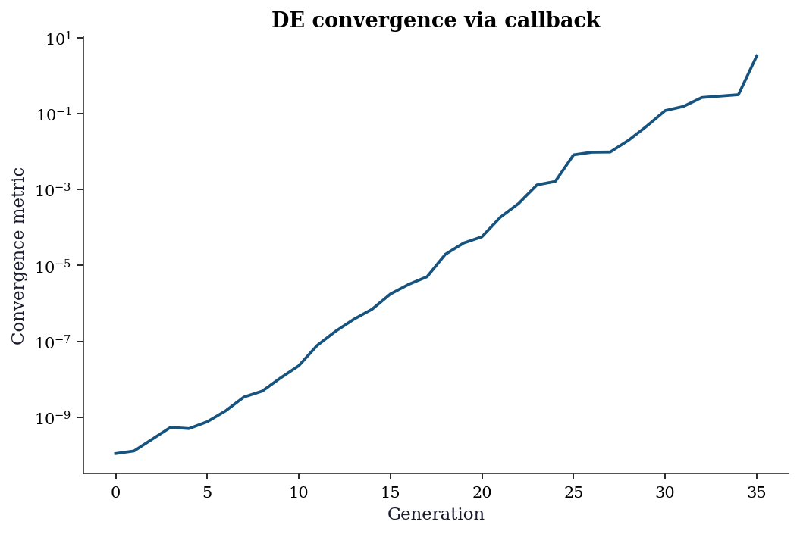
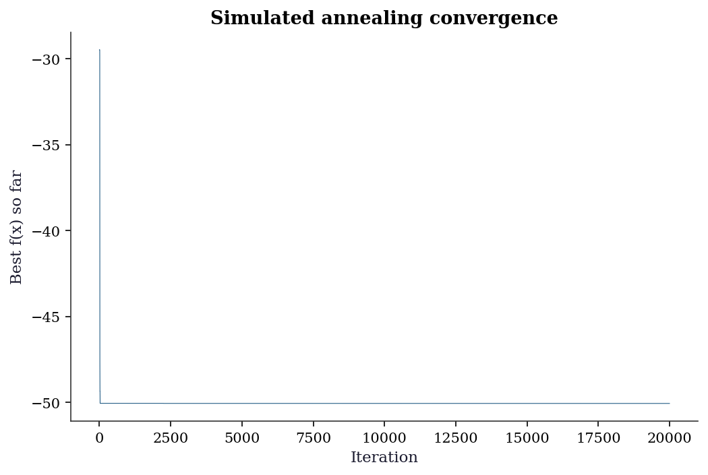
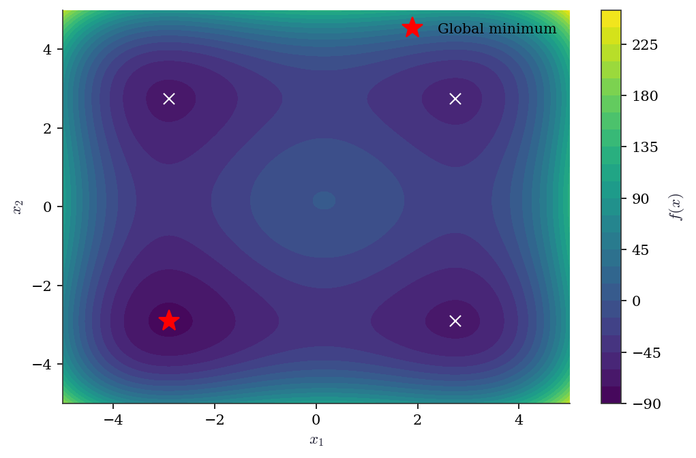

import numpy as np
import matplotlib.pyplot as plt
from scipy.optimize import (
minimize, differential_evolution, dual_annealing,
basinhopping, shgo, direct,
)
plt.style.use('assets/book.mplstyle')5 Global, Stochastic, and Derivative-Free Optimization
5.1 Notation for this chapter
| Symbol | Meaning |
|---|---|
| \(f(\mathbf{x})\) | Objective function (possibly nonconvex, nondifferentiable) |
| \(\Omega\) | Bounded search domain (\(\mathbf{x} \in \Omega \subset \mathbb{R}^p\)) |
| \(f^* = \min_{\mathbf{x} \in \Omega} f(\mathbf{x})\) | Global minimum |
| \(T_k\) | Temperature at iteration \(k\) (simulated annealing) |
| \(\mathcal{S}_k\) | Simplex at iteration \(k\) (Nelder–Mead) |
| \(\mathcal{H}\) | Set of hyperrectangles (DIRECT) |
| \(K_f\) | Lipschitz constant of \(f\) |
6 Motivation
Chapters 2–4 solved smooth optimization problems. The methods converge quickly—superlinearly or even quadratically—but they find local minima, not global ones. For a convex objective, every local minimum is global, so this distinction does not matter. For a nonconvex objective, it matters enormously.
In statistical applications, nonconvexity arises more often than textbooks admit. Gaussian mixture models have multiple local maxima in the likelihood (Chapter 14). Nonlinear least squares with a bad model can have many local minima (Chapter 6). The CASH problem from Chapter 1 is a mixed discrete-continuous optimization over a noisy, nonconvex landscape. Even when the objective is technically convex, a poor starting point can put a local solver in a region where the landscape looks nonconvex due to ill-conditioning.
This chapter covers three classes of methods:
Derivative-free local methods (Nelder–Mead, Powell, COBYLA): they do not use gradients, which makes them applicable to noisy or nondifferentiable objectives, but they have no convergence guarantees even for smooth problems.
Stochastic global methods (simulated annealing, differential evolution, basin-hopping): they explore the landscape stochastically and have global convergence results in theory, but the theory requires conditions (like logarithmic cooling) that make the methods impractically slow.
Deterministic global methods (DIRECT, SHGO): they systematically partition the search space and have rigorous guarantees under Lipschitz continuity, but they scale poorly with dimension.
The honest message of this chapter: global optimization is hard. The methods here are useful tools, but none of them is a substitute for understanding the problem’s structure. When a global method is needed, the first question should be: can I make the problem easier (better parameterization, fewer local minima, a warm start from domain knowledge)?
7 Mathematical Foundation
7.1 The hardness of global optimization
Assumption 5.1 (Lipschitz continuity)
\(f: \Omega \to \mathbb{R}\) is Lipschitz continuous on a bounded domain \(\Omega \subset \mathbb{R}^p\): \[ |f(\mathbf{x}) - f(\mathbf{y})| \leq K_f \|\mathbf{x} - \mathbf{y}\| \quad \forall \mathbf{x}, \mathbf{y} \in \Omega. \]
Under Assumption 5.1, the global minimum exists (by compactness of \(\Omega\) and continuity of \(f\)) but finding it is fundamentally different from finding a local minimum. A local method can verify local optimality by checking the gradient and Hessian. A global method must rule out every other point in \(\Omega\)—which requires either exhaustive search or structural assumptions (like Lipschitz continuity) that allow pruning.
Without Lipschitz continuity or another regularity assumption, no algorithm can guarantee finding the global minimum with finitely many function evaluations. The function could have an arbitrarily deep, narrow well at a point the algorithm never queries.
7.2 Simulated annealing
Simulated annealing is a stochastic method inspired by the physical process of slow cooling in metallurgy. At each iteration, a candidate point \(\mathbf{x}'\) is drawn from a proposal distribution around the current point \(\mathbf{x}_k\). If \(f(\mathbf{x}') < f(\mathbf{x}_k)\), the candidate is accepted. If \(f(\mathbf{x}') \geq f(\mathbf{x}_k)\), the candidate is accepted with probability \(\exp(-(f(\mathbf{x}') - f(\mathbf{x}_k))/T_k)\), where \(T_k\) is the temperature. High temperature makes uphill moves likely (exploration); low temperature makes them unlikely (exploitation).
Theorem 5.1 (Simulated annealing convergence under logarithmic cooling)
Let \(f: \Omega \to \mathbb{R}\) be continuous on a compact set \(\Omega\), and let \(\{T_k\}\) be a temperature schedule satisfying \(T_k \geq C / \ln(k + 2)\) for a sufficiently large constant \(C\) (depending on the depth of the deepest local minimum relative to the global minimum). Then the iterates of simulated annealing satisfy \[ \Pr(\mathbf{x}_k \in \Omega^*_\epsilon) \to 1 \quad \text{as } k \to \infty, \] where \(\Omega^*_\epsilon = \{\mathbf{x} \in \Omega : f(\mathbf{x}) \leq f^* + \epsilon\}\).
Why logarithmic cooling works (and nothing faster does). The acceptance probability for an uphill move of height \(d^*\) (the deepest energy barrier) at temperature \(T_k\) is \(\exp(-d^*/T_k)\). For the chain to escape every local trap infinitely often, these probabilities must sum to infinity—the chain needs infinitely many “lucky” uphill moves. With \(T_k = C/\ln(k+2)\) and \(C \geq d^*\), each term is at least \((k+2)^{-1}\), and the harmonic series diverges: the chain gets infinitely many chances to escape. Any faster cooling (e.g., \(T_k = C/k\)) makes the sum converge, meaning the chain can get permanently trapped. This is Hajek’s (1988) characterization: the necessary and sufficient condition for convergence is precisely that the escape probabilities form a divergent series.
The logarithmic cooling schedule is useless in practice
Theorem 5.1 guarantees convergence, but the rate is \(O(1/\ln k)\)—slower than any polynomial. To reduce \(\Pr(\mathbf{x}_k \notin \Omega^*_\epsilon)\) to \(0.01\) requires \(k \sim e^{100 d^*/C}\) iterations. For any nontrivial problem (\(d^* > 0\)), this is astronomical.
Every practical simulated annealing implementation uses a faster cooling schedule (geometric: \(T_{k+1} = \alpha T_k\) with \(\alpha \approx 0.95\)) that violates the theorem’s conditions. These implementations can and do get trapped in local minima. Simulated annealing is a useful heuristic, not a reliable global optimizer.
7.3 DIRECT: deterministic global search under Lipschitz continuity
The DIRECT algorithm (Dividing Rectangles, Jones et al. 1993) systematically partitions \(\Omega\) into hyperrectangles, evaluates \(f\) at the center of each, and identifies which rectangles are “potentially optimal”—meaning they could contain the global minimum for some Lipschitz constant \(K_f\).
Theorem 5.2 (DIRECT correctness on Lipschitz functions)
Under Assumption 5.1, the DIRECT algorithm samples a dense subset of \(\Omega\): the set of evaluated points \(\{\mathbf{x}_1, \mathbf{x}_2, \ldots\}\) is dense in \(\Omega\) as the number of evaluations \(N \to \infty\). Consequently, \[ \min_{i \leq N} f(\mathbf{x}_i) \to f^* \quad \text{as } N \to \infty. \]
Proof. At each iteration, DIRECT identifies all potentially optimal hyperrectangles: a rectangle \(\mathcal{R}\) with center \(\mathbf{c}\) and half-diagonal \(d\) is potentially optimal if there exists \(\tilde{K} > 0\) such that \[ f(\mathbf{c}) - \tilde{K} d \leq f(\mathbf{c}') - \tilde{K} d' \quad \forall \text{ rectangles } \mathcal{R}', \] and \(f(\mathbf{c}) - \tilde{K} d \leq f^{\text{min}} - \epsilon\) (where \(f^{\text{min}}\) is the current best value and \(\epsilon > 0\) is a tolerance). Potentially optimal rectangles are divided into smaller rectangles by trisecting along their longest dimension.
The key observation: the hyperrectangle containing the global minimizer is always potentially optimal (for \(\tilde{K} = K_f\), the Lipschitz constant). Therefore, this rectangle is divided at every iteration, and its diameter shrinks geometrically. After \(O(3^p)\) iterations per refinement level, the center of the rectangle containing \(\mathbf{x}^*\) is within \(\epsilon\) of \(\mathbf{x}^*\).
More precisely: after \(N\) function evaluations, the smallest hyperrectangle containing \(\mathbf{x}^*\) has diameter at most \(O(N^{-1/p})\) (from the trisection geometry). By Lipschitz continuity: \(f(\mathbf{c}_N) - f^* \leq K_f \cdot O(N^{-1/p})\), which tends to zero. \(\square\)
The \(O(N^{-1/p})\) rate reveals the fundamental limitation of deterministic global optimization: the cost grows exponentially in dimension \(p\). For \(p = 10\), achieving \(\epsilon = 0.01\) requires \(N \sim (K_f/\epsilon)^{10}\) evaluations. This is why DIRECT is practical only for low-dimensional problems (\(p \leq 5\)–\(10\)).
7.4 Nelder–Mead: a method without guarantees
The Nelder–Mead simplex method maintains a simplex of \(p + 1\) points in \(\mathbb{R}^p\) and deforms it through reflection, expansion, contraction, and shrinkage steps, always replacing the worst vertex. It uses no derivatives.
Unlike every other method in this book, Nelder–Mead has no convergence guarantee—not even to a local minimum, not even for smooth convex functions in dimension \(p \geq 2\).
Counterexample 5.1 (McKinnon, 1998)
McKinnon constructed a smooth, strictly convex function \(f: \mathbb{R}^2 \to \mathbb{R}\) and a starting simplex from which Nelder–Mead converges to a non-stationary point. The function is: \[ f(x_1, x_2) = \begin{cases} \theta \phi |x_1|^\tau + x_2 + x_2^2 & \text{if } x_1 \leq 0, \\ \theta |x_1|^\tau + x_2 + x_2^2 & \text{if } x_1 > 0, \end{cases} \] with parameters \(\theta = 6\), \(\phi = 60\), \(\tau = 2\), and starting simplex \(\{(0, 0), (1, 1), (\frac{1+\sqrt{33}}{8}, \frac{1-\sqrt{33}}{8})\}\).
The minimum is at \((0, -1/2)\) with \(f^* = -1/4\). The Nelder–Mead iterates converge to \((0, 0)\) with \(f = 0 \neq f^*\). The simplex collapses to a line segment and the method stalls.
We can reproduce this failure directly:
def mckinnon(x):
"""McKinnon's (1998) counterexample for NM."""
theta, phi, tau = 6.0, 60.0, 2.0
if x[0] <= 0:
return (theta * phi * abs(x[0])**tau
+ x[1] + x[1]**2)
return (theta * abs(x[0])**tau
+ x[1] + x[1]**2)
# McKinnon's specific starting simplex
v0 = np.array([0.0, 0.0])
v1 = np.array([1.0, 1.0])
v2 = np.array([(1 + np.sqrt(33)) / 8,
(1 - np.sqrt(33)) / 8])
simplex0 = np.array([v0, v1, v2])
res_mck = minimize(
mckinnon, v0, method='Nelder-Mead',
options={
'initial_simplex': simplex0,
'xatol': 1e-12,
'fatol': 1e-12,
'maxiter': 10000,
'adaptive': False, # standard NM coefficients
},
)
print(f"NM converges to: {res_mck.x.round(6)}")
print(f"f(NM result) = {res_mck.fun:.6f}")
print(f"True minimum: [0, -0.5]")
print(f"f(true min) = "
f"{mckinnon(np.array([0., -0.5])):.6f}")
print(f"NM found it: {res_mck.fun < -0.2}")NM converges to: [0. 0.]
f(NM result) = 0.000000
True minimum: [0, -0.5]
f(true min) = -0.250000
NM found it: FalseThe simplex collapses to a line along the \(x_2\) axis, and the method stalls at a non-optimal point. This failure is not academic: whenever the simplex degenerates (flattens into a lower-dimensional subspace), the same pathology can occur. Scipy’s implementation includes adaptive parameters (scaling the reflection, expansion, and contraction coefficients with dimension) that reduce but do not eliminate this failure mode.
Despite the lack of guarantees, Nelder–Mead remains widely used because it is simple, requires no derivatives, and works well on many practical problems when \(p\) is small (\(p \leq 10\)). It is scipy’s default method when no gradient is supplied.
8 The Algorithm
Differential evolution is a population-based method: it maintains \(N_{\text{pop}}\) candidate solutions and evolves them using mutation (a weighted difference of two random members), crossover (mixing the mutant with the current member), and greedy selection (keeping the better of the two). Unlike simulated annealing, DE never accepts a worse solution—improvement is driven entirely by the mutation and crossover operators exploring different regions of the landscape.
The key parameters are \(F\) (mutation scale, typically \(0.5\)–\(1.0\)) and \(\text{CR}\) (crossover probability, typically \(0.5\)–\(0.9\)). Scipy’s defaults (\(F = 0.5 + \text{random jitter}\), \(\text{CR} = 0.7\)) work well for most problems. The population size defaults to \(15 \times p\), which is generous for low-dimensional problems but necessary for high-dimensional ones.
9 Statistical Properties
The methods in this chapter arise in statistics when the objective landscape is nonconvex or the gradient is unavailable.
Gaussian mixtures. The log-likelihood of a Gaussian mixture model with \(K\) components has \(O(K!)\) equivalent global maxima (from label permutations) and potentially many additional local maxima. EM (Chapter 14) converges to a local maximum; global search methods can explore multiple basins. In practice, random restarts of EM are more effective than applying a global optimizer to the raw likelihood.
The CASH problem (Chapter 1). AutoML searches over a mixed discrete-continuous space (algorithm choice × hyperparameters) with a noisy, nonconvex objective (cross-validated loss). differential_evolution and dual_annealing are natural tools here. But the CASH objective has a distinctive structure—the discrete component (algorithm selection) creates disjoint subspaces, and within each subspace the landscape may be smooth—that generic global optimizers do not exploit. Bayesian optimization (not covered in this book; see the bibliographic notes) exploits this structure by building a surrogate model.
Simulation-based inference. When the likelihood is intractable but the model can be simulated (agent-based models, complex stochastic systems), derivatives are unavailable and the objective is noisy. Nelder–Mead applied to a smoothed or averaged objective, or derivative-free pattern search, are standard approaches. The convergence theory is weak, but the practical alternative is often no inference at all.
10 SciPy Implementation
SciPy provides five global/derivative-free optimizers, all accessed through different entry points (not minimize for most of them).
import numpy as np
import matplotlib.pyplot as plt
from scipy.optimize import (
minimize, differential_evolution, dual_annealing,
basinhopping, shgo, direct,
)
plt.style.use('assets/book.mplstyle')
rng = np.random.default_rng(42)10.1 Nelder-Mead (derivative-free local)
# Nelder-Mead: no gradient needed, just function values
# Good for small problems (p < 10) where gradients are unavailable
def styblinski_tang(x):
"""Multi-modal test function. Global min at x_i ≈ -2.9035."""
return 0.5 * np.sum(x**4 - 16*x**2 + 5*x)
# Start far from the global minimum
x0 = np.array([3.0, 3.0])
res_nm = minimize(styblinski_tang, x0, method='Nelder-Mead')
print(f"Nelder-Mead: x = {res_nm.x.round(4)}, f = {res_nm.fun:.4f}")
print(f"This is a LOCAL minimum — Nelder-Mead doesn't search globally")Nelder-Mead: x = [2.7468 2.7468], f = -50.0589
This is a LOCAL minimum — Nelder-Mead doesn't search globally10.2 differential_evolution (stochastic global)
# Differential evolution: population-based, searches the full domain
# REQUIRES bounds — it samples uniformly within them
res_de = differential_evolution(
styblinski_tang,
bounds=[(-5, 5), (-5, 5)], # search domain
seed=42,
maxiter=1000,
tol=1e-8,
)
print(f"Diff. evolution: x = {res_de.x.round(4)}, f = {res_de.fun:.4f}")
print(f"Global minimum found (x ≈ -2.9035)")
print(f"Function evaluations: {res_de.nfev}")Diff. evolution: x = [-2.9035 -2.9035], f = -78.3323
Global minimum found (x ≈ -2.9035)
Function evaluations: 90910.3 dual_annealing (generalized simulated annealing)
res_da = dual_annealing(
styblinski_tang,
bounds=[(-5, 5), (-5, 5)],
seed=42,
maxiter=1000,
)
print(f"Dual annealing: x = {res_da.x.round(4)}, f = {res_da.fun:.4f}")
print(f"Function evaluations: {res_da.nfev}")Dual annealing: x = [-2.9035 -2.9035], f = -78.3323
Function evaluations: 404010.4 direct (deterministic global)
# DIRECT: deterministic, divides the search space into rectangles
# Guaranteed to find the global minimum (given enough evaluations)
res_dir = direct(
styblinski_tang,
bounds=[(-5, 5), (-5, 5)],
maxiter=1000,
)
print(f"DIRECT: x = {res_dir.x.round(4)}, f = {res_dir.fun:.4f}")
print(f"Function evaluations: {res_dir.nfev}")DIRECT: x = [-2.9035 -2.9035], f = -78.3323
Function evaluations: 200110.5 shgo (simplicial homology global optimization)
shgo partitions the domain into simplices and uses topological methods to identify all local minima. Unlike DE and SA, it can return every local minimum found, not just the best one.
res_shgo = shgo(
styblinski_tang,
bounds=[(-5, 5), (-5, 5)],
)
print(f"SHGO: x = {res_shgo.x.round(4)}, "
f"f = {res_shgo.fun:.4f}")
print(f"Function evaluations: {res_shgo.nfev}")
print(f"Local minima found: {len(res_shgo.xl)}")SHGO: x = [-2.9035 -2.9035], f = -78.3323
Function evaluations: 35
Local minima found: 110.6 basinhopping (stochastic local-restart)
Basin-hopping applies simulated annealing at the basin level: perturb the current point randomly, run a local optimizer to the nearest minimum, then accept or reject using a Metropolis criterion. It combines SA’s exploration with the precision of a local solver. Wales and Doye (1997) introduced it for molecular energy landscapes, where each basin corresponds to a distinct molecular configuration.
# Basin-hopping needs a starting point (not bounds),
# but we pass bounds to the local minimizer
res_bh = basinhopping(
styblinski_tang,
x0=np.array([3.0, 3.0]),
minimizer_kwargs={
'method': 'L-BFGS-B',
'bounds': [(-5, 5), (-5, 5)],
},
niter=100,
seed=42,
)
print(f"Basin-hopping: x = {res_bh.x.round(4)}, "
f"f = {res_bh.fun:.4f}")
print(f"Function evaluations: {res_bh.nfev}")Basin-hopping: x = [2.7468 2.7468], f = -50.0589
Function evaluations: 236710.7 Monitoring convergence with callbacks
All scipy global optimizers accept a callback argument for monitoring progress. Differential evolution passes the best solution and a convergence metric at each generation:
convergence_log = []
def de_callback(xk, convergence):
"""Record convergence at each DE generation."""
convergence_log.append(convergence)
return False # True would stop early
_ = differential_evolution(
styblinski_tang,
bounds=[(-5, 5), (-5, 5)],
seed=42,
callback=de_callback,
maxiter=200,
tol=1e-10, # tight, so we see full curve
)
fig, ax = plt.subplots()
ax.plot(convergence_log)
ax.set_xlabel('Generation')
ax.set_ylabel('Convergence metric')
ax.set_title('DE convergence via callback')
ax.set_yscale('log')
plt.show()
tol, the algorithm terminates.
10.8 Method comparison
methods = {
'Nelder-Mead (local)': res_nm,
'Diff. evolution': res_de,
'Dual annealing': res_da,
'DIRECT': res_dir,
'SHGO': res_shgo,
'Basin-hopping': res_bh,
}
print(f"{'Method':<22} {'f(x)':>10} "
f"{'nfev':>8} {'Global?':>8}")
print("-" * 52)
for name, res in methods.items():
is_global = 'Yes' if res.fun < -78 else 'No'
print(f"{name:<22} {res.fun:>10.4f} "
f"{res.nfev:>8} {is_global:>8}")Method f(x) nfev Global?
----------------------------------------------------
Nelder-Mead (local) -50.0589 59 No
Diff. evolution -78.3323 909 Yes
Dual annealing -78.3323 4040 Yes
DIRECT -78.3323 2001 Yes
SHGO -78.3323 35 Yes
Basin-hopping -50.0589 2367 No11 From-Scratch Implementation
11.1 Simulated annealing
def simulated_annealing(f, bounds, n_iters=10000, T0=10.0,
cooling=0.995, seed=42):
"""Simple simulated annealing.
Implements Algorithm 5.1 with geometric cooling.
Parameters
----------
f : callable
Function to minimize.
bounds : list of (low, high) tuples
Search domain for each dimension.
n_iters : int
Number of iterations.
T0 : float
Initial temperature.
cooling : float
Temperature decay factor per iteration.
"""
local_rng = np.random.default_rng(seed)
d = len(bounds)
# Initialize randomly within bounds
x = np.array([local_rng.uniform(lo, hi) for lo, hi in bounds])
f_x = f(x)
x_best, f_best = x.copy(), f_x
T = T0
history = [f_best]
for k in range(n_iters):
# Propose: random step within bounds
x_new = x + 0.5 * local_rng.standard_normal(d)
# Clip to bounds
for j in range(d):
x_new[j] = np.clip(x_new[j], bounds[j][0], bounds[j][1])
f_new = f(x_new)
delta = f_new - f_x
# Accept if better, or with probability exp(-delta/T)
if delta < 0 or local_rng.random() < np.exp(-delta / T):
x, f_x = x_new, f_new
if f_x < f_best:
x_best, f_best = x.copy(), f_x
T *= cooling # cool down
history.append(f_best)
return x_best, f_best, historyx_sa, f_sa, hist_sa = simulated_annealing(
styblinski_tang, [(-5, 5), (-5, 5)], n_iters=20000,
)
print(f"SA from scratch: x = {x_sa.round(4)}, f = {f_sa:.4f}")
print(f"scipy dual_annealing: f = {res_da.fun:.4f}")SA from scratch: x = [2.7419 2.7469], f = -50.0585
scipy dual_annealing: f = -78.3323fig, ax = plt.subplots()
ax.plot(hist_sa, linewidth=0.5)
ax.set_xlabel('Iteration')
ax.set_ylabel('Best f(x) so far')
ax.set_title('Simulated annealing convergence')
plt.show()
11.2 Nelder–Mead simplex
def nelder_mead_scratch(
f, x0, maxiter=1000, tol=1e-8,
alpha=1.0, gamma=2.0, rho=0.5, sigma=0.5,
):
"""Nelder-Mead simplex, implementing Algorithm 5.2.
Parameters
----------
f : callable
Function to minimize.
x0 : ndarray
Starting point (shape (d,)).
alpha, gamma, rho, sigma : float
Reflection, expansion, contraction, shrinkage
coefficients.
Returns
-------
x_best : ndarray
Best vertex found.
f_best : float
Function value at x_best.
n_evals : int
Total function evaluations used.
"""
d = len(x0)
# Build initial simplex: x0 + unit steps
simplex = np.zeros((d + 1, d))
simplex[0] = x0
for i in range(d):
simplex[i + 1] = x0.copy()
simplex[i + 1, i] += 1.0
f_vals = np.array([f(v) for v in simplex])
n_evals = d + 1
for k in range(maxiter):
# Sort by function value
order = np.argsort(f_vals)
simplex = simplex[order]
f_vals = f_vals[order]
# Convergence: function values agree
if np.max(np.abs(f_vals - f_vals[0])) < tol:
break
# Centroid of best d vertices
centroid = np.mean(simplex[:-1], axis=0)
# Reflect worst vertex through centroid
xr = centroid + alpha * (centroid - simplex[-1])
fr = f(xr)
n_evals += 1
if f_vals[0] <= fr < f_vals[-2]:
# Accept reflection
simplex[-1] = xr
f_vals[-1] = fr
elif fr < f_vals[0]:
# Try expansion
xe = centroid + gamma * (xr - centroid)
fe = f(xe)
n_evals += 1
if fe < fr:
simplex[-1] = xe
f_vals[-1] = fe
else:
simplex[-1] = xr
f_vals[-1] = fr
else:
# Contract toward centroid
xc = (centroid
+ rho * (simplex[-1] - centroid))
fc = f(xc)
n_evals += 1
if fc < f_vals[-1]:
simplex[-1] = xc
f_vals[-1] = fc
else:
# Shrink all vertices toward best
for i in range(1, d + 1):
simplex[i] = (
simplex[0]
+ sigma
* (simplex[i] - simplex[0])
)
f_vals[i] = f(simplex[i])
n_evals += d
return simplex[0], f_vals[0], n_evalsx_nm_s, f_nm_s, nev = nelder_mead_scratch(
styblinski_tang, np.array([3.0, 3.0]),
)
print(f"NM from scratch: x = {x_nm_s.round(4)}, "
f"f = {f_nm_s:.4f} ({nev} evals)")
print(f"scipy NM: x = {res_nm.x.round(4)}, "
f"f = {res_nm.fun:.4f}")
print(f"Both find the same local minimum")NM from scratch: x = [2.7468 2.7468], f = -50.0589 (79 evals)
scipy NM: x = [2.7468 2.7468], f = -50.0589
Both find the same local minimum11.3 Differential evolution
def de_scratch(
f, bounds, popsize=15, F=0.8, CR=0.7,
maxiter=1000, tol=1e-8, seed=42,
):
"""Differential evolution (DE/rand/1/bin).
Implements Algorithm 5.3.
Parameters
----------
f : callable
Function to minimize.
bounds : list of (low, high)
Search domain for each dimension.
popsize : int
Population size.
F : float
Mutation scale factor (typically 0.5--1.0).
CR : float
Crossover probability (typically 0.5--0.9).
Returns
-------
x_best : ndarray
Best member of final population.
f_best : float
Function value at x_best.
n_gens : int
Number of generations completed.
"""
local_rng = np.random.default_rng(seed)
d = len(bounds)
lo = np.array([b[0] for b in bounds])
hi = np.array([b[1] for b in bounds])
# Initialize population uniformly in bounds
pop = local_rng.uniform(
lo, hi, size=(popsize, d),
)
fitness = np.array([f(x) for x in pop])
for gen in range(maxiter):
for i in range(popsize):
# Select 3 distinct others for mutation
idxs = [j for j in range(popsize)
if j != i]
a, b, c = local_rng.choice(
idxs, size=3, replace=False,
)
# Mutation: DE/rand/1
mutant = pop[a] + F * (pop[b] - pop[c])
mutant = np.clip(mutant, lo, hi)
# Binomial crossover
trial = pop[i].copy()
j_rand = local_rng.integers(d)
for j in range(d):
if (local_rng.random() < CR
or j == j_rand):
trial[j] = mutant[j]
# Greedy selection: keep if better
f_trial = f(trial)
if f_trial <= fitness[i]:
pop[i] = trial
fitness[i] = f_trial
# Stop if population has converged
if np.std(fitness) < tol:
break
best = np.argmin(fitness)
return pop[best], fitness[best], gen + 1x_de_s, f_de_s, gens = de_scratch(
styblinski_tang,
bounds=[(-5, 5), (-5, 5)],
maxiter=500,
)
print(f"DE from scratch: x = {x_de_s.round(4)}, "
f"f = {f_de_s:.4f} ({gens} generations)")
print(f"scipy DE: x = {res_de.x.round(4)}, "
f"f = {res_de.fun:.4f}")DE from scratch: x = [-2.9035 -2.9035], f = -78.3323 (57 generations)
scipy DE: x = [-2.9035 -2.9035], f = -78.332312 Diagnostics
Global optimization diagnostics are fundamentally different from local methods: you can never be sure you found the global minimum.
12.1 Multi-start comparison
The best practical diagnostic: run the optimizer multiple times from different starting points and compare results.
# Run differential_evolution 5 times with different seeds
results = []
for seed in range(5):
res = differential_evolution(styblinski_tang,
[(-5, 5), (-5, 5)], seed=seed)
results.append(res.fun)
print(f"DE results across 5 seeds: {[f'{r:.4f}' for r in results]}")
print(f"All agree: {np.std(results) < 0.01}")
print("If results disagree, the problem has multiple local minima")
print("and the optimizer is not reliably finding the global one.")DE results across 5 seeds: ['-78.3323', '-78.3323', '-78.3323', '-78.3323', '-78.3323']
All agree: True
If results disagree, the problem has multiple local minima
and the optimizer is not reliably finding the global one.12.2 Nelder-Mead failure detection
# Nelder-Mead on a high-dimensional problem: it fails
def sphere(x):
return np.sum(x**2)
for d in [2, 10, 50]:
x0 = np.ones(d) * 5
res = minimize(sphere, x0, method='Nelder-Mead',
options={'maxiter': 50000})
print(f"d={d:>3}: f = {res.fun:.2e}, nfev = {res.nfev:>7}, "
f"success = {res.success}")
print("\nNelder-Mead degrades rapidly above d ≈ 10.")
print("Use BFGS with gradients instead for smooth high-d problems.")d= 2: f = 1.48e-09, nfev = 80, success = True
d= 10: f = 1.06e-08, nfev = 1407, success = True
d= 50: f = 8.64e-02, nfev = 56453, success = False
Nelder-Mead degrades rapidly above d ≈ 10.
Use BFGS with gradients instead for smooth high-d problems.12.3 Landscape visualization
Visualizing the objective—when the problem is 2D or can be projected to 2D—is the single most informative diagnostic. It reveals how many local minima exist, how deep they are, and whether a local optimizer is likely to find the global minimum from a given starting point.
x_grid = np.linspace(-5, 5, 200)
y_grid = np.linspace(-5, 5, 200)
X_g, Y_g = np.meshgrid(x_grid, y_grid)
# Vectorized evaluation avoids a Python loop
Z = 0.5 * (X_g**4 - 16*X_g**2 + 5*X_g
+ Y_g**4 - 16*Y_g**2 + 5*Y_g)
fig, ax = plt.subplots()
cs = ax.contourf(
X_g, Y_g, Z, levels=30, cmap='viridis',
)
fig.colorbar(cs, ax=ax, label='$f(x)$')
# Mark global minimum
ax.plot(-2.9035, -2.9035, 'r*', markersize=15,
label='Global minimum')
# Show where NM lands from 3 starting points
starts = [np.array([3., 3.]),
np.array([-3., 3.]),
np.array([3., -3.])]
for x0_trial in starts:
r = minimize(
styblinski_tang, x0_trial,
method='Nelder-Mead',
)
ax.plot(r.x[0], r.x[1], 'wx', markersize=8)
ax.set_xlabel('$x_1$')
ax.set_ylabel('$x_2$')
ax.legend(loc='upper right')
plt.show()
12.4 When to stop: budget allocation
Global optimizers lack a reliable stopping criterion. Unlike gradient-based methods, there is no norm of the gradient to test. Two practical rules:
Diminishing returns. Track the best function value as a function of evaluation count. When the improvement per 1000 evaluations drops below a threshold relative to the initial improvement, stop. The SA convergence plot in Chapter 11 illustrates this: the curve flattens well before the budget is exhausted.
Multi-start agreement. Run the optimizer \(R\) times with different seeds. If all \(R\) runs agree on \(f^*\) to within tolerance, declare convergence. If they disagree, the budget is insufficient—either increase it or switch to a method with better guarantees.
# How many evaluations are enough?
# Run DE with increasing budgets and check agreement
budgets = [100, 500, 1000, 5000]
for budget in budgets:
vals = []
for seed in range(10):
r = differential_evolution(
styblinski_tang,
bounds=[(-5, 5), (-5, 5)],
seed=seed, maxiter=budget,
)
vals.append(r.fun)
spread = np.std(vals)
print(f"Budget {budget:>5}: best = {min(vals):.4f}"
f", std = {spread:.4f}"
f", converged = {spread < 0.01}")Budget 100: best = -78.3323, std = 0.0000, converged = True
Budget 500: best = -78.3323, std = 0.0000, converged = True
Budget 1000: best = -78.3323, std = 0.0000, converged = True
Budget 5000: best = -78.3323, std = 0.0000, converged = True13 Computational Considerations
| Method | Cost per iteration | Global guarantee | Dimension limit |
|---|---|---|---|
| Nelder-Mead | 1–2 f-evals | No | \(d \leq 10\) |
| Diff. evolution | popsize \(\times\) f-evals | No (stochastic) | \(d \leq 100\) |
| Dual annealing | 1 f-eval + local search | No (stochastic) | \(d \leq 100\) |
| DIRECT | 1+ f-evals per rectangle | Yes (Lipschitz) | \(d \leq 5\) |
| SHGO | Simplex sampling + local | Yes (Lipschitz) | \(d \leq 10\) |
| Basin-hopping | Local minimize per step | No (stochastic) | \(d \leq 100\) |
For high dimensions (\(d > 100\)): none of these methods work well. Use gradient-based methods (Ch. 2-4) with multiple random restarts.
14 Worked Example
Finding the global minimum of a multi-modal function that models a real problem: maximizing the negative log-likelihood of a Gaussian mixture model (2 components, 1D).
# Generate data from a 2-component Gaussian mixture
from scipy.stats import norm as normal
data = np.concatenate([
rng.normal(-2, 0.5, 100),
rng.normal(3, 1.0, 150),
])
def neg_log_lik_gmm(params):
"""Negative log-likelihood for a 2-component Gaussian mixture.
params = [pi, mu1, sigma1, mu2, sigma2]
"""
pi, mu1, s1, mu2, s2 = params
if s1 <= 0 or s2 <= 0 or pi <= 0 or pi >= 1:
return 1e10 # invalid parameters
ll = np.sum(np.log(
pi * normal.pdf(data, mu1, s1) +
(1 - pi) * normal.pdf(data, mu2, s2)
))
return -ll
# Global search with differential_evolution
res_gmm = differential_evolution(
neg_log_lik_gmm,
bounds=[(0.01, 0.99), (-5, 5), (0.1, 3), (-5, 5), (0.1, 3)],
seed=42, maxiter=1000, tol=1e-8,
)
pi, mu1, s1, mu2, s2 = res_gmm.x
print(f"Estimated: pi={pi:.2f}, mu1={mu1:.2f}, s1={s1:.2f}, "
f"mu2={mu2:.2f}, s2={s2:.2f}")
print(f"True: pi=0.40, mu1=-2.0, s1=0.5, mu2=3.0, s2=1.0")Estimated: pi=0.40, mu1=-2.03, s1=0.39, mu2=2.95, s2=1.04
True: pi=0.40, mu1=-2.0, s1=0.5, mu2=3.0, s2=1.015 Exercises
Exercise 5.1 (\(\star\star\), diagnostic failure). Run Nelder-Mead on the 50-dimensional sphere function \(f(\mathbf{x}) = \sum x_i^2\) starting from \(\mathbf{x}_0 = (5, 5, \ldots, 5)\). Does it converge? Compare with BFGS (supplying the gradient \(2\mathbf{x}\)). Why does Nelder-Mead fail in high dimensions?
%%
# Already demonstrated above
print("Nelder-Mead fails in d=50: the simplex has d+1=51 vertices")
print("and degenerates (collapses to a lower-dimensional subspace).")
print("BFGS uses gradient information and converges in O(d) iterations.")
res_bfgs = minimize(sphere, np.ones(50)*5, method='BFGS',
jac=lambda x: 2*x)
print(f"BFGS d=50: f = {res_bfgs.fun:.2e}, nit = {res_bfgs.nit}")Nelder-Mead fails in d=50: the simplex has d+1=51 vertices
and degenerates (collapses to a lower-dimensional subspace).
BFGS uses gradient information and converges in O(d) iterations.
BFGS d=50: f = 1.20e-27, nit = 3%%
Exercise 5.2 (\(\star\star\), comparison). Compare differential_evolution, dual_annealing, and direct on the Styblinski-Tang function in 2D, 5D, and 10D. Report the function value and number of evaluations. Which method scales best with dimension?
%%
def stybT(x): return 0.5*np.sum(x**4 - 16*x**2 + 5*x)
for d in [2, 5, 10]:
bounds = [(-5, 5)] * d
f_true = d * (-39.16599) # global min per dimension
de = differential_evolution(stybT, bounds, seed=42)
da = dual_annealing(stybT, bounds, seed=42)
print(f"d={d}: DE f={de.fun:.2f} (nfev={de.nfev}), "
f"DA f={da.fun:.2f} (nfev={da.nfev}), "
f"true={f_true:.2f}")d=2: DE f=-78.33 (nfev=348), DA f=-78.33 (nfev=4040), true=-78.33
d=5: DE f=-195.83 (nfev=1536), DA f=-195.83 (nfev=10115), true=-195.83
d=10: DE f=-391.66 (nfev=5488), DA f=-391.66 (nfev=20463), true=-391.66%%
Exercise 5.3 (\(\star\star\), implementation). Implement simulated annealing from scratch. Verify on the 2D Styblinski-Tang function. Compare geometric cooling (\(T_{k+1} = 0.995 T_k\)) with logarithmic cooling (\(T_k = C/\ln(k+2)\)). Which finds the global minimum?
%%
# Geometric cooling (already implemented)
_, f_geom, _ = simulated_annealing(
styblinski_tang, [(-5,5),(-5,5)], n_iters=50000, cooling=0.9999)
# Logarithmic cooling (modify the function)
def sa_log(f, bounds, n_iters=50000, C=50.0, seed=42):
lr = np.random.default_rng(seed); d=len(bounds)
x=np.array([lr.uniform(lo,hi) for lo,hi in bounds]); fx=f(x)
xb,fb=x.copy(),fx
for k in range(n_iters):
T=C/np.log(k+2)
xn=x+0.5*lr.standard_normal(d)
for j in range(d): xn[j]=np.clip(xn[j],bounds[j][0],bounds[j][1])
fn=f(xn); delta=fn-fx
if delta<0 or lr.random()<np.exp(-delta/T): x,fx=xn,fn
if fx<fb: xb,fb=x.copy(),fx
return fb
f_log = sa_log(styblinski_tang, [(-5,5),(-5,5)])
print(f"Geometric: f = {f_geom:.4f}")
print(f"Logarithmic: f = {f_log:.4f}")
print(f"True global: {styblinski_tang(np.array([-2.9035,-2.9035])):.4f}")Geometric: f = -78.3322
Logarithmic: f = -78.3323
True global: -78.3323%%
Exercise 5.4 (\(\star\star\star\), conceptual). Explain why no derivative-free global optimizer can guarantee finding the global minimum in fewer than \(O((1/\epsilon)^d)\) function evaluations for a Lipschitz function in \(d\) dimensions. What does this mean for practical global optimization when \(d > 10\)?
%%
A Lipschitz function with constant \(K\) can hide a narrow well of depth \(\epsilon\) within a ball of radius \(\epsilon/K\). To detect this well, you must evaluate \(f\) at a point within that ball. In \(d\) dimensions, the search domain has volume \((b-a)^d\), and the ball has volume proportional to \((\epsilon/K)^d\). You need at least \(((b-a)K/\epsilon)^d\) evaluations to cover the domain densely enough.
For \(d = 10\) with \(K = 1\), \(\epsilon = 0.01\), and domain \([-5, 5]\): you need \((1000)^{10} = 10^{30}\) evaluations. This is the curse of dimensionality for global optimization — it is fundamentally harder than local optimization in high dimensions.
The practical implication: for \(d > 10\), abandon global guarantees. Use gradient-based local methods (Ch. 2-4) with multiple random restarts, or exploit problem structure (e.g., convexity, separability).
%%
16 Bibliographic Notes
Nelder-Mead: Nelder and Mead (1965). The McKinnon counterexample: McKinnon (1998), “Convergence of the Nelder–Mead simplex method to a nonstationary point,” SIAM J. Optim. Scipy’s adaptive variant scales the NM coefficients with dimension following Gao and Han (2012). Differential evolution: Storn and Price (1997), “Differential evolution—a simple and efficient heuristic for global optimization over continuous spaces,” J. Global Optim. The DE/rand/1/bin variant implemented in this chapter is the most common; Price, Storn, and Lampinen (2005) catalog the full family.
Simulated annealing: Kirkpatrick, Gelatt, and Vecchi (1983); Hajek (1988) for the necessary and sufficient condition on the cooling schedule (logarithmic cooling). Dual annealing as implemented in scipy follows Xiang et al. (1997), combining classical SA with a local search phase. DIRECT: Jones, Perttunen, and Stuckman (1993); the convergence proof follows Finkel and Kelley (2006) for the potentially optimal rectangle framework. Basin-hopping: Wales and Doye (1997), originally developed for molecular energy landscapes. SHGO: Endres, Sandrock, and Focke (2018), “A simplicial homology algorithm for Lipschitz optimisation,” J. Global Optim.
For the curse of dimensionality in global optimization: Nemirovski and Yudin (1983). The \(O((1/\epsilon)^d)\) lower bound for Lipschitz global optimization is sharp. For Bayesian optimization (not in scipy but increasingly important): Snoek, Larochelle, and Adams (2012); for a textbook treatment, Garnett (2023).